Simple Variables
Variables Built for Designers. Eliminating UX Debt.

Problem
I inherited design files burdened with years of UX debt—over 30 button styles and countless inconsistencies in color and component usage. While components and color styles helped to some extent, they often broke when designers needed a more custom component. Designers would override components or apply colors not used in the style guide, leading to subtle but widespread visual drift. What we needed was a more robust, systematic approach—one that would eliminate guesswork, enforce consistency, and scale effortlessly across platforms while preventing old habits from resurfacing.
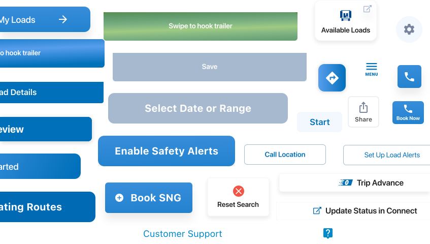
Concept
A Design Token is a source of truth for designers and developers. It represents design values, and can be used to take granular control of UI at scale. Known within Figma as variants.
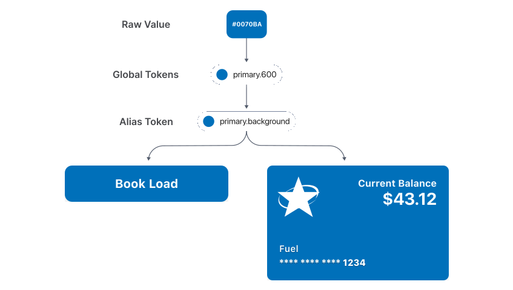
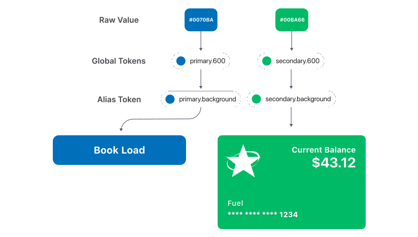
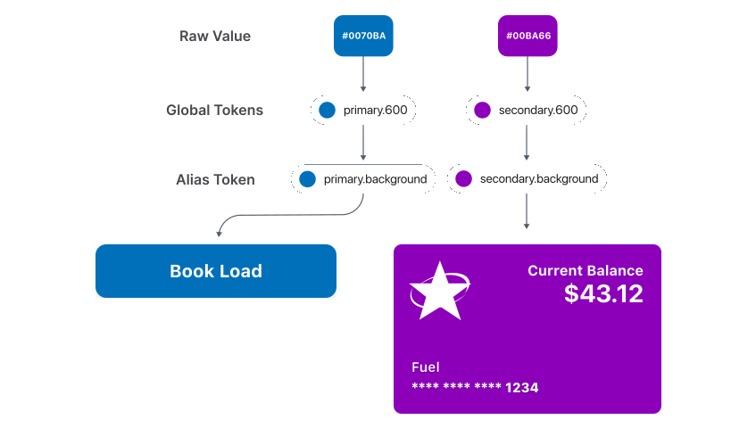
Process
After researching, testing, and making sure colors would be WCAG compliant, I created a key for what each token would be responsible for, and how they would interact with each other.
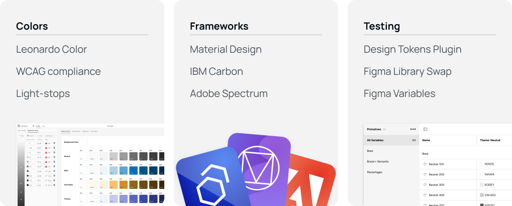
Solution
I Introduced design tokens as a shared language between design and development—a unified source of truth easily implemented with a JSON file.

V1 Results
Good: Reduced inconsistency, solving UX debt. Reduced guesswork and enforced consistency. Scaled to other platforms and projects. Created a cohesive language between design and development.
Bad: Steep learning curve for designers to adopt. High cognitive load due to naming complexity. Inefficiencies in system that needed to be reduced.
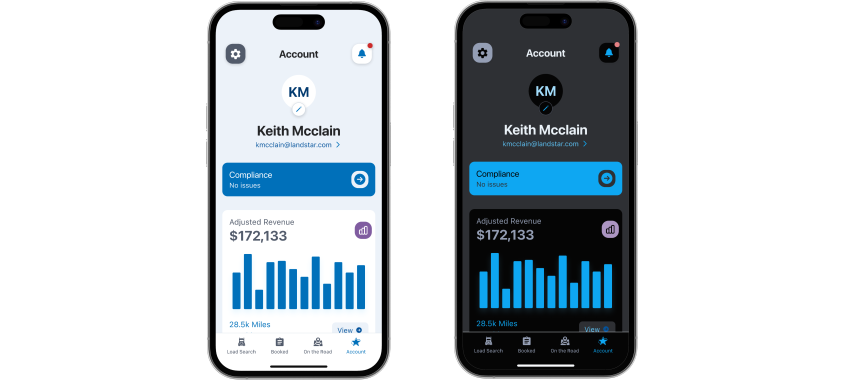
Net Promotor Score (NPS) of V1
Designers: +70 | Developers: +100
How might we...
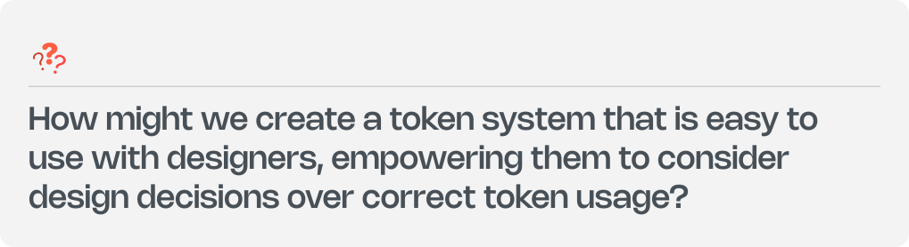
V1 to V2
I set out to create a variable system that puts design first—one that lets designers focus on visual decisions without getting bogged down in technical complexity.
1st Key Difference - Color Scale
V1 was built with the color scale as the foundation—surfaces, borders, and text were then fit into that system based on predefined ranges. In contrast, V2 started with the unique needs of each element. Surfaces, borders, and text were treated as distinct entities, each requiring different levels of contrast and expression. This shift led to a more dynamic and purpose-driven color scale, rather than a rigid, incremental one.

V1: Predefined surfaces, borders, and content scales. Represented in light mode and without inverse tokens for simplicity.

V2: Dynamic surfaces, borders, and content ranges.
2nd Key Difference - Surfaces & Text
In V1, content and surfaces followed a strict one-to-one relationship. In V2, I broke that dependency. Surfaces were designed with more subtle differences in light stops. Content hierarchy was decoupled from the surface it sat on, and instead expressed through opacity. The result: a cleaner, more flexible system that still met accessibility standards while significantly reducing cognitive load for designers.

V1: Surfaces and content linked together for consistent contrast. Plus creating hierarchy.

V2: Text can be mixed and matched with surfaces.
3rd Key Difference - State Layers
In V1, changing a component's state required swapping the entire token. In V2, I introduced state tokens that could be layered on top of the base token. Designers simply applied a universal modifier like state-pressed, state-hover, or state-disabled to the fill. This dramatically improved clarity and speed.

V1: States move up or down the scale.
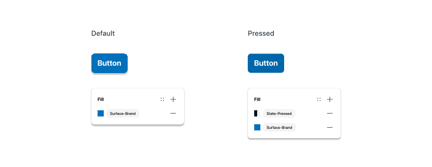
V2: States layers added to the default fill.
4th Key Difference - Edge Cases
In V1, I introduced "inverse" tokens to handle surfaces requiring stronger contrast—typically darker surfaces in light mode or lighter ones in dark mode. This approach worked well for standout elements like call-to-action buttons but came with added complexity.
With V2, I streamlined the system. The need for inverse-like surfaces still existed, but I created a clearer distinction between regular surface colors and semantic colors. Only semantic values—those tied to meaning, like alerts or primary actions—require both light and dark variants for each theme. All other surfaces now align directly with the active theme, either light or dark.
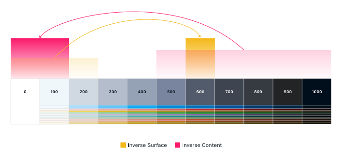
V1: Inverse options allow dark surfaces and light content while in light mode.
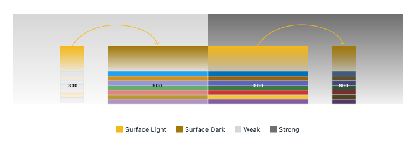
V2: Semantic values provide weak and strong options to replace the need for inverse complexity.
Theme Switching
For cases where a designer wants a neutral surface to behave like an inverse (e.g., a dark side panel in light mode), the system allows that panel layer to render in dark mode independently of the global theme. When switching themes, the panel remains dark—preserving visual continuity.
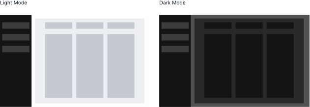
5th Key Difference - Powerful Theming
In V1, light and dark mode logic was handled at the global token level. In V2, I shifted to a single unified palette. Light and dark mode behavior was now managed at the alias level—where each alias could reference different global tokens depending on the mode. This freed up the global palette, allowing full color swaps to be reserved for entirely different themes rather than just light/dark modes.
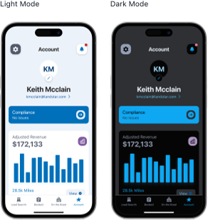
V1: Results from swapping global values.

V2: Results from swapping alias and global values. Can change both theme and mode independently.
But what about developers
Although the new system was designed to be simpler for designers, I was careful not to disrupt what was already working well for developers. I collaborated closely with our staff engineer to validate this approach. He confirmed it was not only feasible, but that the structural changes on his end were minimal. The update was considered trivial to implement—but delivered a high impact across design and development workflows.
V2
Good: Kept the reduction of UX debt from V1. Maintained cross-platform scalability while preserving a unified design and development language. Smaller learning curve for designers to adopt. Token naming conventions were simplified. System inefficiencies were reduced.
Bad: More complexity behind the curtain making it more difficult to architecturally update by other designers if needed.
Net Promotor Score (NPS) of V2
Designers: +90 (+20 from V1) | Developers: +100 (no change)
Designers shifted from passive supporters in V1 to active promoters in V2. Developers maintained their strong support and continued to find the system reliable and intuitive.
Next, we applied tokens to typography, spacing, borders, and elevation for a holistic and robust design system.